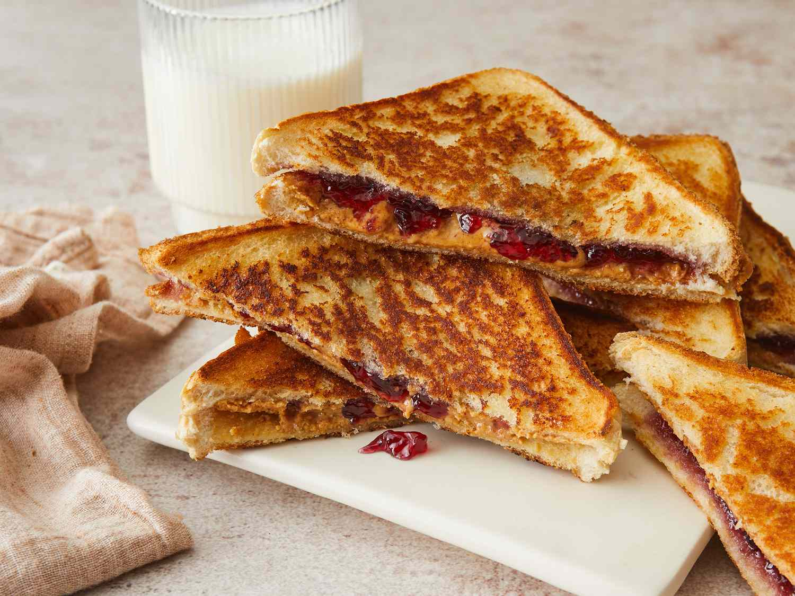

A staple of American childhood foods, peanut butter and jelly sandwich, or PB&J for short is a sandwich consisting of two slices of bread, one with a layer of peanut butter, and the other one with jelly or jam. Quick, easy, and affordable, the first written reference for the sandwich appeared in 1901 in the Boston Cooking School Magazine of Culinary Science and Domestic Economics.
Meal prep time : 15 minutes
Servings : 1